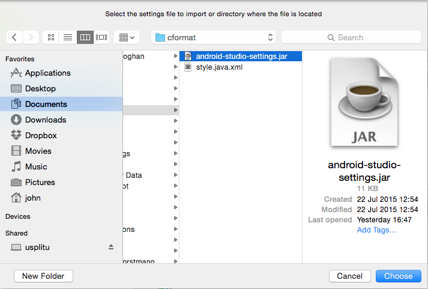
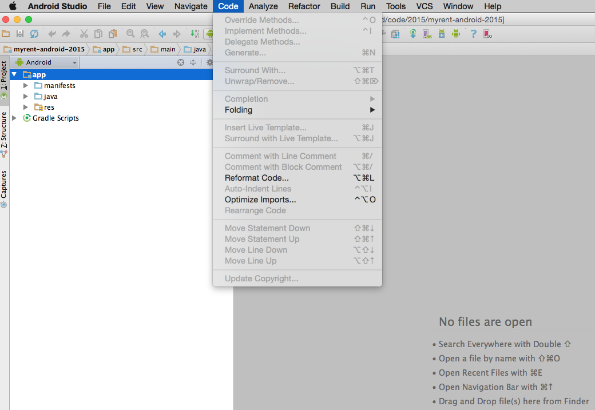
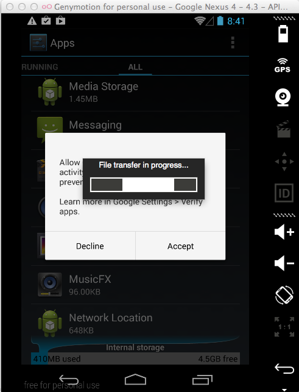

Objectives
In this lab we shall introduce more advanced tools. We provide a customized set of styles applicable to HTML and Java source code. We demonstrate how to use the standalone SDK Manager to import additional packages or delete existing packages. Android Studio possesses a virtual device (AVD) on which the apps you develop may be installed and tested. We briefly discuss this. Simple instructions are provided on how to deploy your apps on a physical phone during development. Finally, a number of sample applications are provided that you may install on Genymotion by simply dragging and dropping onto the virtual device.
Code Styling
The Android Studio default configuration includes a section dealing with code styling. This refers to such features as the number of spaces used in indentation, the positioning of curly braces - for example is the opening brace inline or on the next line - and so on.
The default code styling does not really match our requirements and therefore we have provided a customized styling jar. Our customized scheme has made changes to both Java and HTML styling. The following describes how to replace the default styling with this customized version.
We begin introducing the customized styling by first accessing the Default Preferences pane, that may be opened from within Android Studio Preferences.

Import this scheme as follows:
- Ensure that the Default Preferences window is closed.
- Download customized scheme jar file and save to a temporary location.
- Select Configure as shown in Figure 2.

- Select Import Setting as shown in Figure 3.

- Browse to the location where you have saved the settings jar file.
- Select the file and press Choose. See Figure 4.

- In the Select Components to Import window select only Code Style as shown in Figure 5.

- Press OK in the Restart Needed window.
This styling will now be applied to any new projects you create.
You may reformat any existing projects with this newly imported style as follows:
- In the project tool window, select module or directory to which you want to apply your reformatting.
- From the main menu, select Code | Reformat Code (or press ⌥ ⌘ L on a Mac).
- Alternatively, in the Android tool window, as shown in Figure 7, right-click the app directory and from the context menu and select Reformat Code. -In the Reformat Code dialog box accept the default settings for reformatting, as shown in Figure 8, and click Run.

Android Virtual Device (AVD)
The following screenshots show how to launch the Android Virtual Device (AVD) manager, delete an existing AVD and replace with a more suitable one:


Run an app on the newly created AVD, for example Hello ICTSkills and select the virtual device (emulator) on which to install the app:

SDK Manager
This step illustrates use of the SDK Manager. It provided for reference only at this stage: you are recommended not to install or delete packages only when necessary.
The Android SDK Manager may be used to add or delete packages from your sdk install. These packages may be summarised as follows:
- SDK Tools
- included by default when Android Studio installed earlier
- SDK Platform-tools
- a default package will be present.
- SDK Platform
- At least one platform required.
- SDK Tools
You may launch the SDK manager Android Studio in a number of ways. Here's one approach:
- Open an existing project, for example Hello ICTSkills.
- Click on the SDK manager icon in the toolbar.
This opens the Default Preferences window. This window has three tabbed windows:
- SDK Platforms (Figure 2)
- SDK Tools (Figure 3)
- SDK Update Sites (Figure 4)

Click on the link SDK Standalone SDK Manager located at the foot of the Default Preferences window.
- The manager should launch and present something like that shown in Figure 5, in which you are invited to install 15 packages. Do NOT accept this invitation.
- You may inspect already installed packages by unticking Updates/New checkbox and ticking Installed checkbox. See Figure 6 for an example.

- All available packages excluding those already installed may be viewed by ticking Updates/New and unticking Installed checkboxes.

Check that the Intel x86 Emulator Accelertor (HAXM installer) is also installed (as shown in Figure 8)
HAXM will improve the performance of the Android Virtual Device (AVD) - the emulator included in the Android Studio install. This may otherwise be too slow to be of practical use. In any event, preference will be given to the use of the third party emulator, Genymotion.
If you intend using the AVD then you are recommended to consult the Intel documentation to determine compatibilty with your system.
Additionally, on Windows it may be necessary to separately install HAXM, downloadable here.
Sample Android apps
Download the following apps from the local achive to a temporary folder and, in turn, drag and drop each onto the GenyMotion emulator.
- This will install the apps on the virtual device.

Launch the apps and experiment with their functionality.